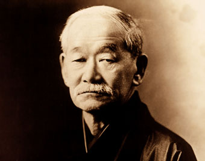
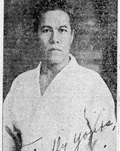
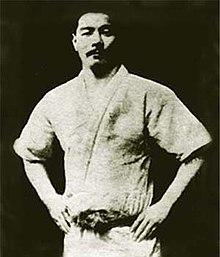
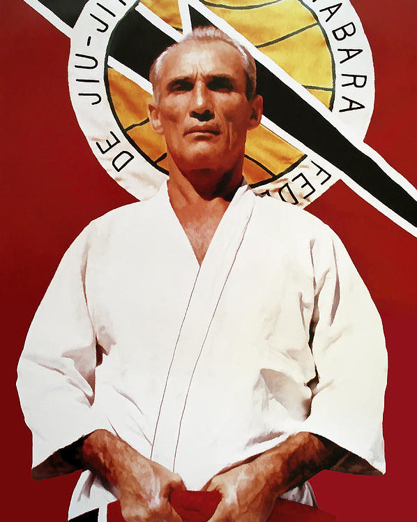
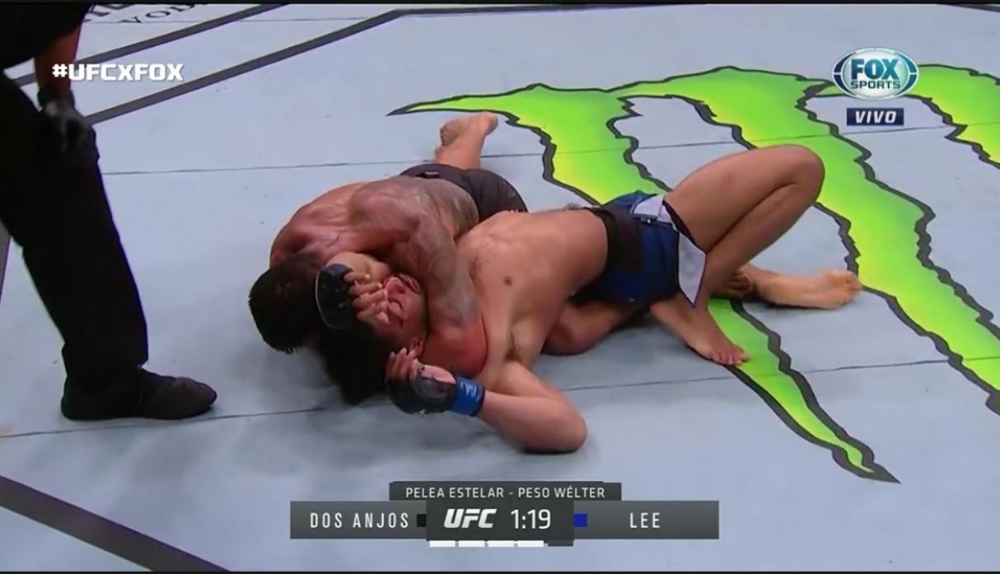
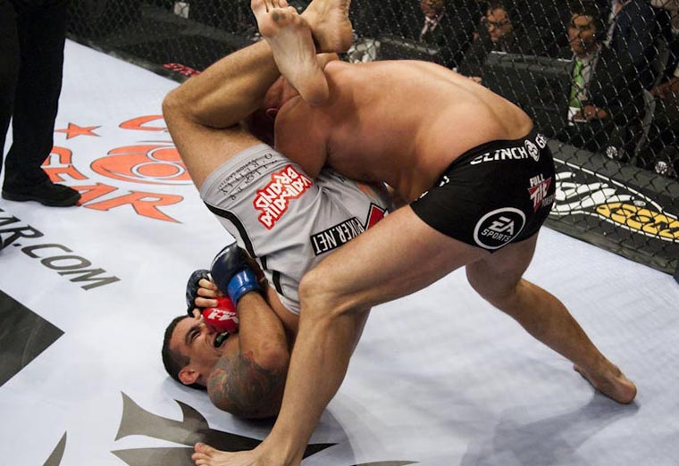
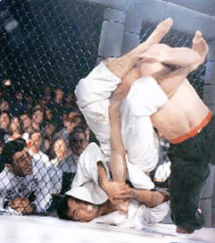

¿Qué es el Jiu Jitsu Brasileño?
El Jiu Jitsu Brasileño (BJJ, por sus siglas en inglés) es un arte marcial de grappling, esto es, lucha basada en el derribo y dominio. Incluye técnicas de derribe, movimientos de dominio corporal y llaves y estrangulamientos, de raíces japonesas pero con el propósito de "igualar tanto al débil como al fuerte", tomando una frase de uno de sus máximos exponentes, Hélio Gracie. La destreza y fluidez de este arte y la sazón brasileña son el principal atractivo que tiene el BJJ. Más info de esta arte aquí (en inglés).
Práctica del Jiu Jitsu
La práctica del arte sigue la enseñanza tradicional impartida ancestralmente, desde Jigoro Kano (creador del Kodokan Judo, de donde es derivado el Jiu Jitsu Brasileño), pasando por Geo Omori (quien introdujo el Judo en Brasil), Mitsuyo Maeda, Carlos y Hélio Gracie, y llegando hasta los exponentes de nuestros tiempos como Marcus "Buchecha" Almeida, Leandro Lo, Renato Cardoso, entre otros. Es el arte suave por excelencia.
|  |  |  |  |
| Jigoro Kano | Geo Omori | Mitsuyo Maeda | Hélio Gracie |
Relación con las MMA
En las MMA hay mucha aplicación de técnicas del arte suave. Técnicas de derribo, luxaciones y estrangulamientos de BJJ son visibles en las MMA. Popularizado por Royce Gracie, el BJJ ha tomado una figura central y de suma consideración en la lucha para toda aplicación.
|  |  |
 |  |
| Rafael Dos Anjos vs Kevin Lee | Nate Diaz vs Conor McGregor | Fabrício Werdum vs Caín Velásquez | Royce Gracie |